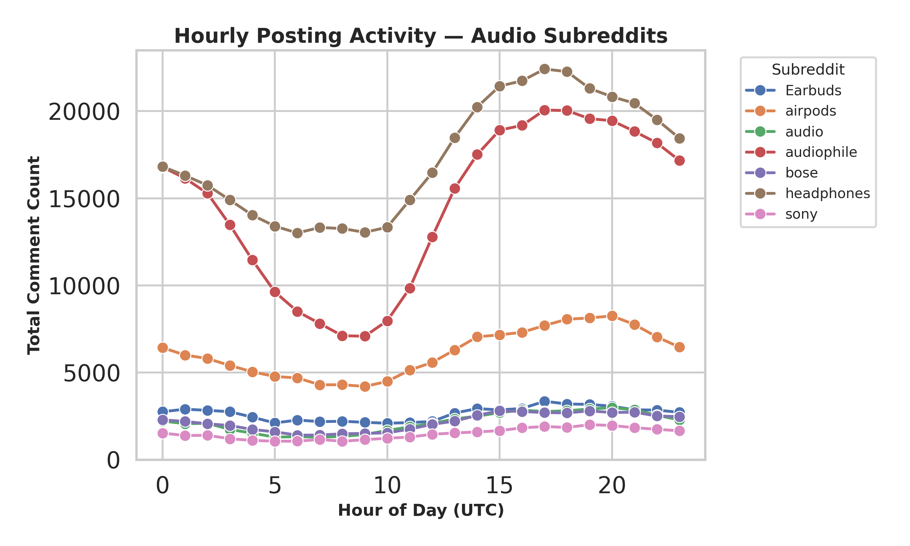
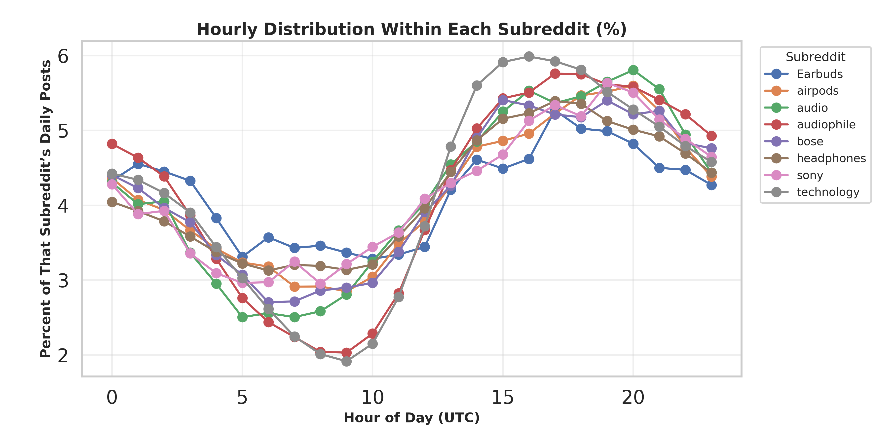
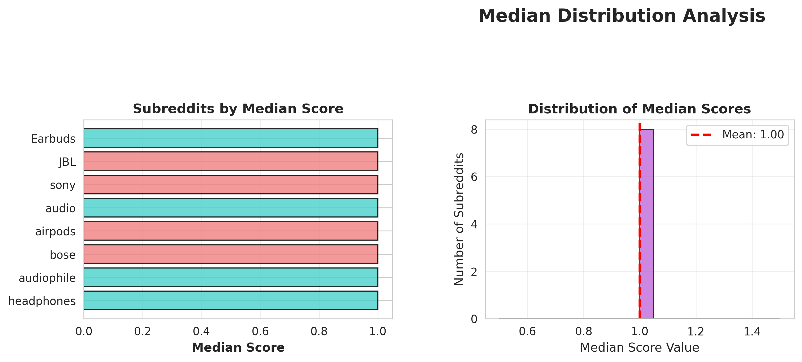
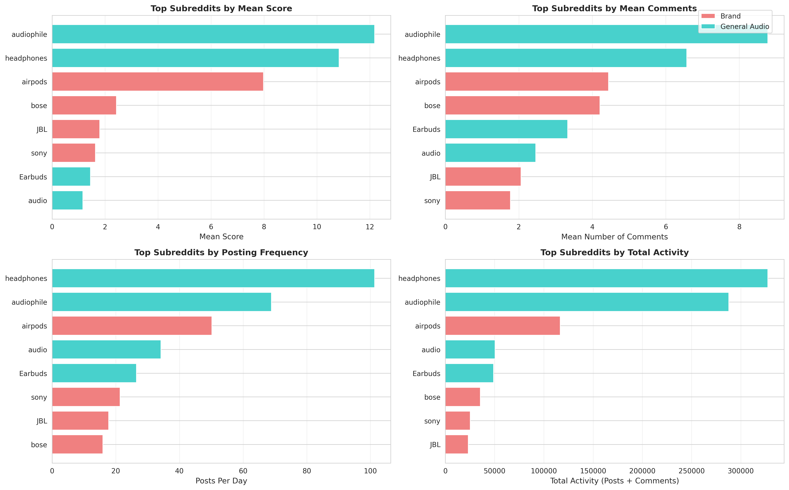
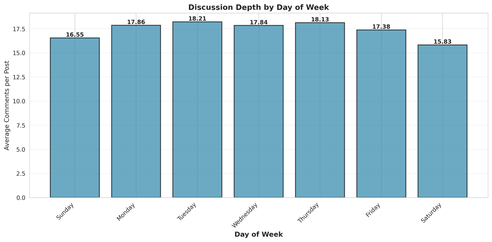
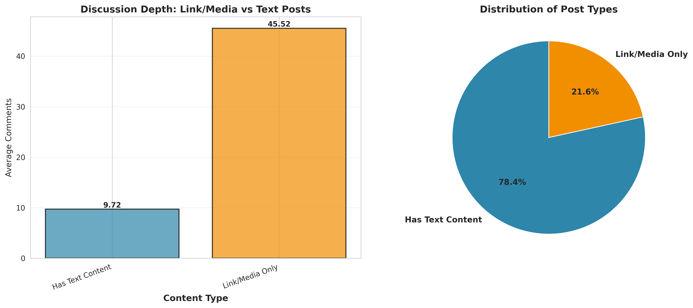
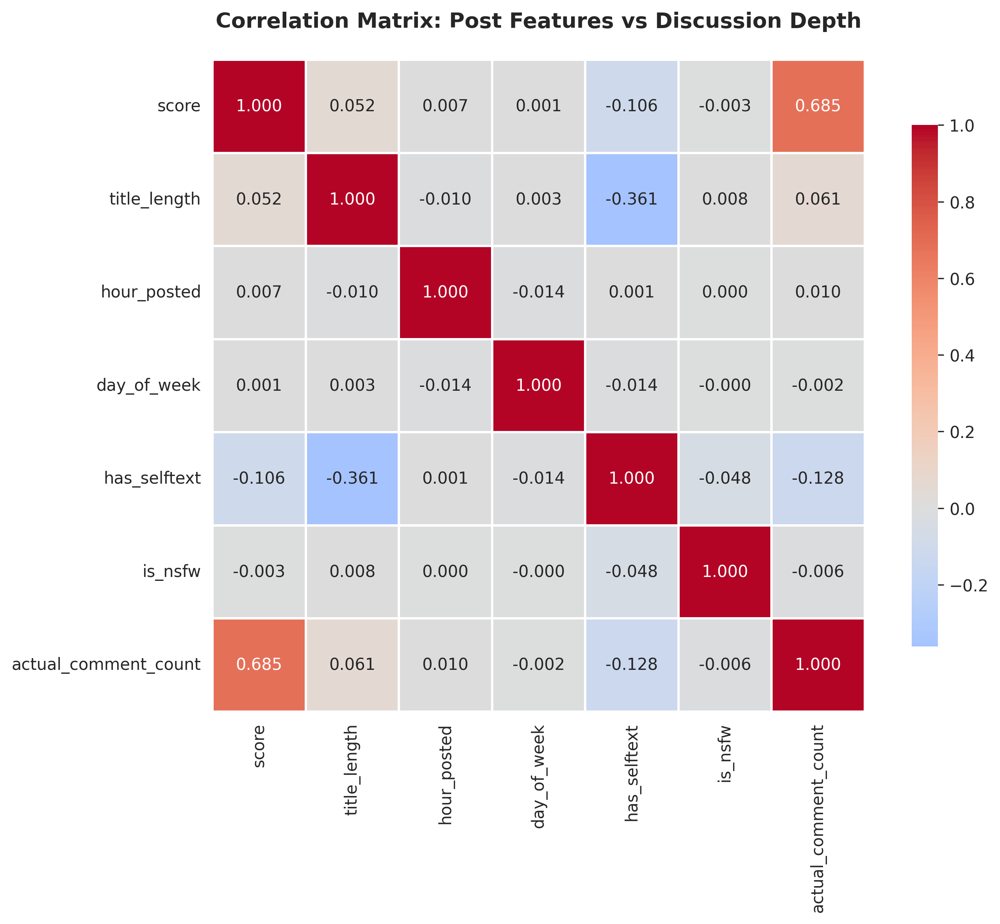

Exploratory Data Analysis
Statistical Analysis and Temporal Patterns
Overview
This page presents the exploratory data analysis (EDA) of our Reddit dataset. The analysis addresses three core business questions through statistical summaries, temporal trend exploration, and visualizations designed to uncover behavioral and engagement patterns within audio-related communities.
Data Overview
Dataset Summary
Key Statistics:
- Total Comments: 9,017,846
- Total Submissions: 507,984
- Date Range: 2023-06-01 to 2024-07-31
- Number of Subreddits: 23
This dataset captures over nine million Reddit comments and half a million submissions spanning 23 subreddits related to headphones, audio gear, and brand-specific communities.
Business Question 1: How Does Public Discussion About Audio Products Evolve Over Time?
Objective
Identify daily, weekly, and long-term posting rhythms across different audio communities to understand engagement cycles and temporal behavior patterns among users.
Methodology
- Extracted temporal features:
hour,day_of_week,month, andyearfrom thecreated_utctimestamp. - Aggregated post counts and average scores by subreddit and time window.
- Compared engagement trends across major subreddits (
headphones,audiophile,Airpods,SonyHeadphones, etc.). - Visualized trends via time series plots and heatmaps illustrating posting activity by hour and day.
Findings
  


Key Insights:
- Headphones and Audiophile dominate the ecosystem, accounting for nearly 70% of all comments.
- The overall traffic for smaller subreddits are low (Earbuds, Sony), however have a higher baseline than broader subreddits, i.e., doesn’t fluctuate as much.
- AirPods ranks third, reflecting strong but more specialized brand-oriented discussion.
- Posting activity peaks between 15:00–20:00 UTC (10 AM–3 PM EST), aligning with U.S. daytime hours.
- Weekly engagement peaks mid-week (Wednesday–Friday), indicating that weekdays drive higher participation.
- Hourly engagement patterns are globally synchronized, suggesting shared activity cycles across regions.
Business Question 2: Which Product Communities Attract the Highest Engagement?
Objective
Compare brand-specific and general audio subreddits to identify which communities exhibit the highest engagement based on posting frequency, average scores, and user interactions.
Methodology
Computed average score, number of comments, and posting frequency per subreddit.
Ranked subreddits by mean engagement metrics.
Measured user overlap to quantify cross-community participation.
Utilized three key datasets:
engagement_metrics.csv: Subreddit-level engagement metrics.summary_statistics.csv: Aggregated activity summaries.user_overlap_pairs.csv: Pairwise user overlap across subreddits.
Findings

The median score across most communities is 1, confirming a highly skewed engagement distribution — a common characteristic in social media datasets.
1. Brand vs. General Audio Overview

| Metric | Brand | General Audio |
|---|---|---|
| Mean Score | 3.5 | 6.4 |
| Mean Comments | 3.1 | 5.3 |
| Posts per Day | 26.3 | 57.7 |
| Community Share | 50% | 50% |
General Audio communities outperform Brand communities across all metrics, despite having equal representation.
2. Subreddit-Level Engagement

Top 5 Subreddits by Mean Score
| Rank | Subreddit | Mean Score |
|---|---|---|
| 1 | audiophile | 12.5 |
| 2 | headphones | 10.8 |
| 3 | airpods | 7.98 |
| 4 | bose | 1.80 |
| 5 | JBL | 1.45 |
Top 5 Subreddits by Posting Frequency
| Rank | Subreddit | Posts per Day |
|---|---|---|
| 1 | headphones | 100+ |
| 2 | audiophile | 70+ |
| 3 | airpods | 50.2 |
| 4 | audio | 34.2 |
| 5 | Earbuds | 26.5 |
Top 5 Subreddits by Total Activity (Posts + Comments)
| Rank | Subreddit | Total Activity |
|---|---|---|
| 1 | headphones | 300,000+ |
| 2 | audiophile | 270,000+ |
| 3 | airpods | 116,623 |
| 4 | audio | 50,512 |
| 5 | sony | 25,285 |
Top 5 Subreddit Pairs by Shared Users

| Subreddit 1 | Subreddit 2 | Shared Users |
|---|---|---|
| audiophile | headphones | 7,970 |
| audio | audiophile | 2,417 |
| airpods | headphones | 2,385 |
| Earbuds | headphones | 1,902 |
| audio | headphones | 1,305 |
Key Insights:
- General audio communities generate nearly double the engagement of brand-specific ones.
- audiophile and headphones dominate across all metrics, serving as core community hubs.
- AirPods stands out among brand-specific subreddits, indicating strong brand engagement.
- The long-tail engagement pattern reveals that most posts receive limited attention, while a small subset goes viral.
- Substantial user overlap across general and brand communities suggests fluid audience movement and cross-interest participation.
Business Question 3: How Does Post Timing and Structure Relate to Discussion Depth?
Objective
Examine how the timing and structure of Reddit posts influence engagement levels (measured by comment counts and scores).
Findings
1. Temporal Engagement Patterns
 Peak Engagement Hour: 14:00 UTC (2 PM) — Corresponds to U.S. morning hours.
Peak Engagement Hour: 14:00 UTC (2 PM) — Corresponds to U.S. morning hours.
 Best Day for Engagement: Tuesday exhibits the highest average posting and comment activity.
2. Visibility and Engagement Correlation

A strong positive correlation (r = 0.685) exists between post score and comment count. High-scoring posts (>100) receive over 50 comments on average, while low-scoring posts (<10) typically receive fewer than 5.
3. Post Structure Analysis
 Title Length: Weak correlation (r = 0.061); title length minimally affects engagement.
Title Length: Weak correlation (r = 0.061); title length minimally affects engagement.
 Content Type: Text (self) posts generate slightly higher engagement than link posts.
4. Correlation Matrix

Key Insights:
- Timing matters: Posts made between 13:00–16:00 UTC (U.S. mornings) and on Tuesdays attract the most engagement.
- Visibility drives discussion: High post scores are strongly linked to deeper conversations.
- Skewed engagement: A small number of viral posts dominate overall comment volume.
- Title length negligible: Minimal correlation (0.061) shows title length has little effect.
- Content type secondary: Text posts slightly outperform link posts, but differences are small.
Summary
Answers to EDA Business Questions
Temporal Patterns: The
headphonesandaudiophilesubreddits dominate overall activity, representing over two-thirds of all comments. Engagement peaks during U.S. daytime hours (15–20 UTC) with mid-week increases.Community Engagement: General audio communities consistently outperform brand-specific ones in engagement metrics.
audiophileandheadphonesare the central discussion hubs, whileairpodsis the strongest performer among brand subreddits.Post Timing and Structure: Engagement depth correlates strongly with post visibility (r = 0.685), not structural features like title length or post type. Optimal posting times are Tuesdays around 14:00 UTC.
Key Takeaways
- Community Concentration: A few large subreddits drive the majority of conversation, highlighting network centralization within the audio niche.
- Engagement Dynamics: Visibility and timing play a greater role in engagement than content form or title design.
- Strategic Implication: To maximize visibility, content creators and brands should align posting schedules with identified peak hours and focus on generating upvotes and early traction.
- Behavioral Insight: Cross-community participation indicates that the Reddit audio audience is highly interconnected and exhibits consistent temporal behavior patterns.
All EDA code is available in the code/eda/ directory. Processed datasets are stored in data/csv/, and visualizations are available in data/plots/.